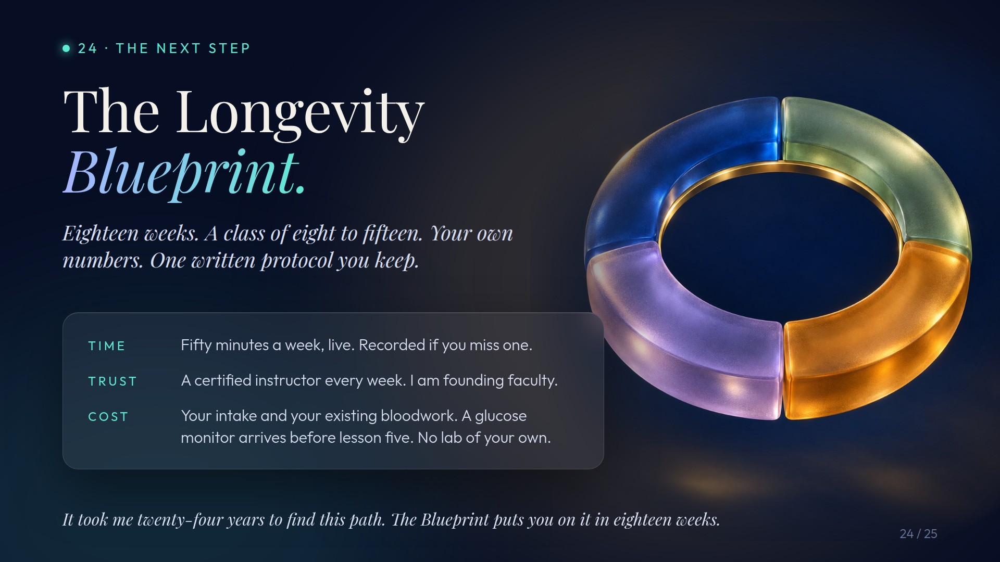
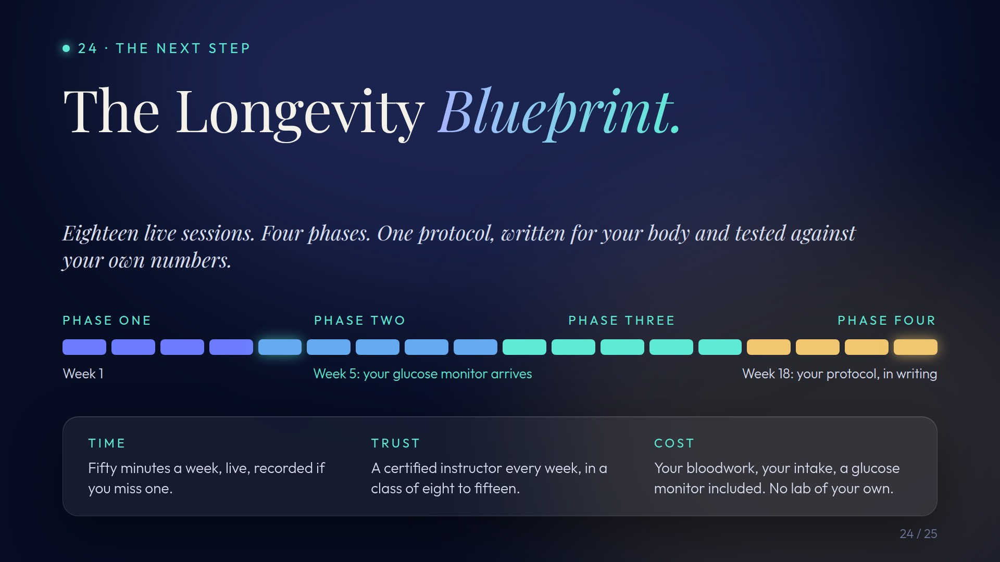
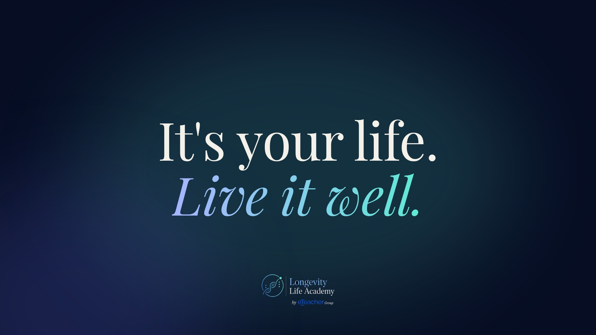

Openers and closers, for Omri
Not on Julie's link. The opener replaces slide 1; the four closers follow Why. Intention. Resources. as 22 to 25. Earlier versions sit folded under each slot.
Opening, light
Approved. The academy logo from the live site, Live Masterclass, Julie Gibson Clark, Founding Faculty.

earlier versions, 1

22 · You've already taken the first step.
The eighteen-dot rail with tonight's dot lit. Three things they already have.

earlier versions, 2


23 · So why is it so hard to keep going?
Time, trust, cost, in the audience's own words. None of them is willpower.

earlier versions, 2


24 · The Longevity Blueprint.
One slide. The same cake, built week by week, on your own numbers. The eighteen weeks in four phases from the published syllabus, the three moments that matter marked: week 1 your bloodwork, week 5 the glucose monitor applied live, week 17 your written protocol. Three sentences: live in a class of eight to fifteen, fifty minutes one evening a week, a certified instructor every week.

earlier versions, 2


25 · It's your life. Live it well.
The academy's line as the end card. Twenty-four years on the left, eighteen weeks lit on the right.

earlier versions, 2
